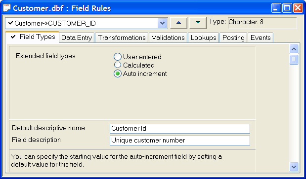

Overview of Field Rules
Alpha Anywhere offers great flexibility for controlling data entry in your database. You can create Field Rules to govern how you enter data in a table or set, and help ensure that data entry is accurate, consistent, and complete. You use Field Rules to control the information that you can enter in a field.
For example, you have a phone number field in a customer table, and you want to require that a phone number be entered for each new customer in a specific format, (000) 000-0000. Here you would use mask and template field rules to define the format of the phone number. You would then specify the field as required to force field entry in order to save a new record.
With sets, you can define and modify Field Rules for all fields in the set's component tables simultaneously. However, the rules defined for each field are stored only at the table level; a set does not have its own Field Rules.
 Note : Auto increment
in Alpha Anywhere looks at the highest value for the field in a
table, and adds one.
Note : Auto increment
in Alpha Anywhere looks at the highest value for the field in a
table, and adds one.
You can use Field Rules to perform the following tasks:
Insert calculations or incrementing values
Validate, format, and insert field values
Change field entry case
Ensure reasonable and accurate values
Create table lookups for filling-in data
Post data from one table to another
Define Xbasic scripts for different events
Right-click on a table in the Control Panel.
Select Edit Field Rules from the right-click menu to display the Field Rule Editor.
Use the drop-down box at the top to switch between fields.
Use the tabs to switch between groups of Field Rules.

Field Rule Editor
To delete a field rule:
Display the Tables/Sets tab of the Control Panel.
Select the table that contains the field rule.
Select Design > Field Rules.
Select the field that has the field rule from the drop-down list box.
Select the tab that implements the rule.
Click Rules > Delete Rule. If you want to delete all rules, select Rules > Delete All Rules.
Overview of Field Rules
The following tables provide a brief description of each Field Rule.
|
Field Types |
Description |
|
Assigns Calculated or Auto-Increment values to fields as records are entered. | |
|
Changes the default field name; for example, F_Name to First Name. | |
|
Provides the status bar text that appears when a field is selected. |
|
Data Entry |
Description |
|
Specifies that a field must contain data. | |
|
Inserts formatting characters, like dashes and spaces,
and determines whether a number or letter can be entered in a particular
location in the field. | |
|
Auto-Advance |
Moves the cursor to the next field when the current field is full; for example, after you enter both characters in a two-character state abbreviation field, the cursor moves to the next field. |
|
When creating a new record, fills a field with a default value, which can be either a constant or the result of a expression. | |
|
Causes the cursor to skip over the field, when you press the Tab or Enter keys. | |
|
Places the cursor at the beginning or end of selected or non-selected text, when the field gets focus. |
|
Transformations |
Description |
|
Converts values to uppercase, lowercase, or a combination of both. | |
|
Fills in a longer word or phrase, when you enter a user-defined keyword. (Included for V4 compatibility.) The preferred method is to use the Tools > Speed Glossary command, |
|
Validations |
Description |
|
Requires that a field value be entered twice, to ensure data entry accuracy. | |
|
Specifies the minimum and maximum field values. | |
|
Prohibits a field value from being entered in the same field for another record. | |
|
Forces multiple fields in a record to be unique. | |
|
Cross-checks a field value to a field value in another table. | |
|
Checks the validity of a field value using a validation expression or user-defined function. |
|
Lookups |
Description |
|
Presents a pre-defined list of values for field entry. | |
|
Presents a pre-defined list, which can include multiple sub-lists, for field entry. | |
|
Presents selections from an existing table, for field entry. | |
|
Presents values for field entry, based on a conditional expression. | |
|
Presents values from a list of previously entered values. |
|
Posting |
Description |
|
Posts data from the current field to a target field, allowing you to add to, subtract from, or replace the target field value. Posting does not create new records. Posting is useful for keeping a running total, by using the add option, or for tracking inventory levels, by using the subtract option. |
|
Events |
Description |
|
Lets you execute Xbasic code for the following field events: CanEditField, OnEditField, CanWriteField, and OnWroteField. | |
|
Lets you execute Xbasic code for the following record events: CanEditRecord, OnEditRecord, CanChangeRecord, OnChangeRecord, CanSaveRecord, OnSaveRecord, CanMarkRecord, OnMarkRecord, CanUnmarkRecord, OnUnmarkRecord, CanDeleteRecord, OnDeleteRecord. |